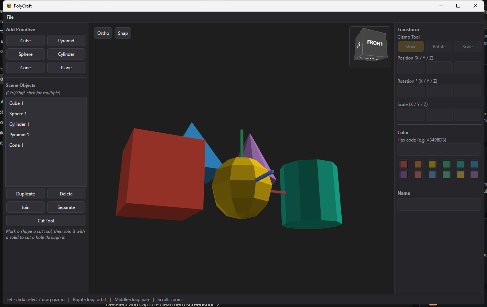
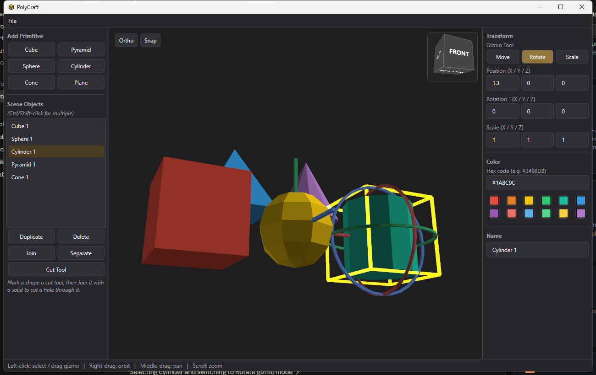

A free Windows app for building low-poly scenes: assemble primitives, move/rotate/scale them with a real object-oriented gizmo, and export straight to OBJ or STL.
A real, working desktop app — every shape below was built and shaped live in the viewport.

Cube, pyramid, sphere, cylinder, cone, and plane, each a flat-shaded low-poly mesh. Drop in as many as you like, position them precisely, and pick a color from the quick palette or a hex code.

Move, Rotate, and Scale handles track the selected object's actual orientation, so dragging a handle always does what it visually indicates — even after the object has already been rotated. The rotate rings turn by the angle your mouse sweeps around the object, not a linear axis hack.
No subscriptions, no cloud upload — everything runs locally.
Cube, pyramid, sphere, cylinder, cone, and plane, each generated as a flat-shaded low-poly mesh.
Move, Rotate, and Scale handles that track the object's own orientation, so dragging always matches what you see.
A wireframe selection outline per object, with Ctrl/Shift-click multi-select in the object list.
Combine multiple primitives into one compound object, or split a joined object back apart.
Optional snapping that aligns the moved object's edges/center with nearby objects', independently per axis.
A Fusion 360-style navigation cube in the corner of the viewport — click a face to snap the camera to that orthographic view.
Right-drag to orbit, middle-drag to pan, scroll to zoom, with a perspective/orthographic toggle.
A palette of quick-pick swatches plus a hex code field per object.
Scenes save to a JSON project file and reload exactly as left.
Wavefront OBJ and binary STL, ready for slicing or import elsewhere.
File → Render saves a clean, 2x supersampled PNG of the current view, with the gizmo and selection outline hidden.
Free and open source for Windows.
dotnet run after cloning —
see the README.